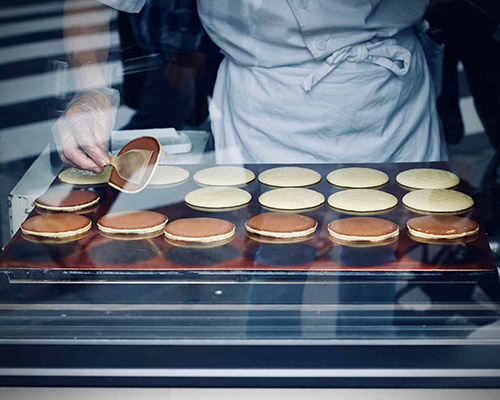

Community Flips over Pancakes
By Suzie Que
Preston's town council has started serving pancakes in the town square every week. "The turn out has been fantastic!" says Mayor Green, "We really feel like this has brought a new sense of community to our town." The town welcomes all to come and enjoy the pancakes, live music and vendors every Saturday morning. It has given small buisness owners in the community a new place to find new customers and increase their networking.
Sarah Jones, owner of My Fair Soap, says, "I have been able to double my sales since I began renting a booth at the pancake mornings. I love being out in my community selling what I am passionate about!" There have been about 6 booths at every pancake breakfast this month, and the town is hoping that more will be joinging soon.
It's not just small buisnesses that are getting exposure from the breakfasts. Musical groups have been able to share their talents as well. Mike Day of the group Two for Tea said, "It has been amazing getting to play for a live crowd. We don't get too many opportunities to share our music outside of our regular gigs, so this has been great!" And the town people are loving it too. Long time town member George Mike said, "I really feel like our sense of community has gotten stronger with these breakfasts. Everyone is coming out and having a great time!"
Preston's town council has started serving pancakes in the town square every week. "The turn out has been fantastic!" says Mayor Green, "We really feel like this has brought a new sense of community to our town." The town welcomes all to come and enjoy the pancakes, live music and vendors every Saturday morning. It has given small buisness owners in the community a new place to find new customers and increase their networking...
continue to full article